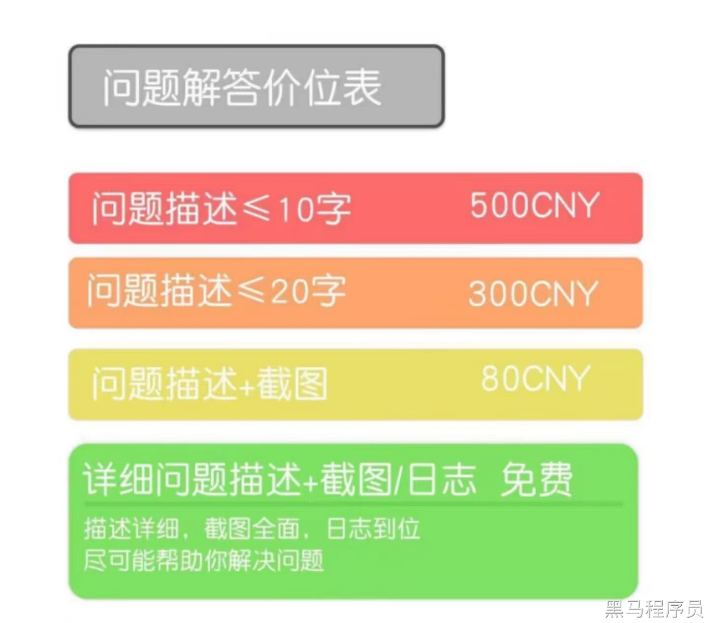
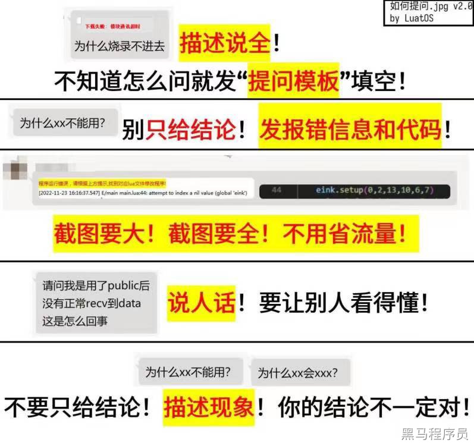

<!DOCTYPE lake>
<h2 data-lake-id="iiTeK" id="iiTeK"><span data-lake-id="u1cd76011" id="u1cd76011">相关概念</span></h2><p data-lake-id="udf94204e" id="udf94204e"><span data-lake-id="u35ffd8b2" id="u35ffd8b2">以下是每一个项目都通用的相关概念</span></p><p data-lake-id="u8703dee5" id="u8703dee5"><span data-lake-id="u23f50abc" id="u23f50abc">​</span><br/></p><ol list="ub36db86c"><li data-lake-id="u5e372a8e" fid="u2cd75bf4" id="u5e372a8e"><span data-lake-id="u9b2be34f" id="u9b2be34f">电源电压检测，adc采样。</span></li><li data-lake-id="u44e0acdb" fid="u2cd75bf4" id="u44e0acdb"><span data-lake-id="u590c10ed" id="u590c10ed">模拟信号的传感器数据采样，adc采样。</span></li></ol><ol data-lake-indent="1" list="ub36db86c"><li data-lake-id="ua8536195" fid="u2cd75bf4" id="ua8536195"><span data-lake-id="u2d4619e8" id="u2d4619e8">温度传感器</span></li><li data-lake-id="u1d7c14cd" fid="u2cd75bf4" id="u1d7c14cd"><span data-lake-id="ucccbb76a" id="ucccbb76a">压力传感器</span></li><li data-lake-id="u4dd7cf4d" fid="u2cd75bf4" id="u4dd7cf4d"><span data-lake-id="ufcfa27cf" id="ufcfa27cf">湿度传感器</span></li><li data-lake-id="ud7f5f9b3" fid="u2cd75bf4" id="ud7f5f9b3"><span data-lake-id="u1c29a1c6" id="u1c29a1c6">位置传感器</span></li><li data-lake-id="ua0f8ffe0" fid="u2cd75bf4" id="ua0f8ffe0"><span data-lake-id="u72393a89" id="u72393a89">气体浓度传感器</span></li></ol><ol list="ub36db86c" start="3"><li data-lake-id="u61ccefa2" fid="u2cd75bf4" id="u61ccefa2"><span data-lake-id="u0800b0ce" id="u0800b0ce">lvgl的移植和屏幕显示 </span></li></ol><ol data-lake-indent="1" list="ub36db86c"><li data-lake-id="ud22545bb" fid="u2cd75bf4" id="ud22545bb"><span data-lake-id="u3ae58bb6" id="u3ae58bb6">画文字</span></li><li data-lake-id="u80d3ba70" fid="u2cd75bf4" id="u80d3ba70"><span data-lake-id="u6ef5a60f" id="u6ef5a60f">画按钮</span></li><li data-lake-id="u4ebfd1c1" fid="u2cd75bf4" id="u4ebfd1c1"><span data-lake-id="u519a8712" id="u519a8712">弹性布局</span></li><li data-lake-id="u6d47ec63" fid="u2cd75bf4" id="u6d47ec63"><span data-lake-id="ue66e79e8" id="ue66e79e8">表格布局</span></li></ol><ol list="ub36db86c" start="4"><li data-lake-id="u598adfb3" fid="u2cd75bf4" id="u598adfb3"><span data-lake-id="u8dba2727" id="u8dba2727">电源模块</span></li></ol><ol data-lake-indent="1" list="ub36db86c"><li data-lake-id="u269ecf47" fid="u2cd75bf4" id="u269ecf47"><span data-lake-id="u6f8236c6" id="u6f8236c6">ldo</span></li><li data-lake-id="u66bbc3fc" fid="u2cd75bf4" id="u66bbc3fc"><span data-lake-id="uc1adc4db" id="uc1adc4db">dc-dc</span></li></ol><ol list="ub36db86c" start="5"><li data-lake-id="u227fd528" fid="u2cd75bf4" id="u227fd528"><span data-lake-id="ubdf6d215" id="ubdf6d215">pwm模块</span></li></ol><ol data-lake-indent="1" list="ub36db86c"><li data-lake-id="u42ed3e9b" fid="u2cd75bf4" id="u42ed3e9b"><span data-lake-id="u6f9eb0af" id="u6f9eb0af">电机</span></li><li data-lake-id="u459df3c0" fid="u2cd75bf4" id="u459df3c0"><span data-lake-id="udc60b971" id="udc60b971">led呼吸灯</span></li></ol><ol list="ub36db86c" start="6"><li data-lake-id="uef01fdf2" fid="u2cd75bf4" id="uef01fdf2"><span data-lake-id="u1fd3205d" id="u1fd3205d">I2C </span></li></ol><ol data-lake-indent="1" list="ub36db86c"><li data-lake-id="u09871e8b" fid="u2cd75bf4" id="u09871e8b"><span data-lake-id="u30de2deb" id="u30de2deb">mpu6050</span></li><li data-lake-id="uf9fc45b7" fid="u2cd75bf4" id="uf9fc45b7"><span data-lake-id="uc46d2ecf" id="uc46d2ecf">I2C屏幕</span></li></ol><ol list="ub36db86c" start="7"><li data-lake-id="u9686957c" fid="u2cd75bf4" id="u9686957c"><span data-lake-id="ucd87e5aa" id="ucd87e5aa">USB </span></li></ol><ol data-lake-indent="1" list="ub36db86c"><li data-lake-id="u4cb26645" fid="u2cd75bf4" id="u4cb26645"><span data-lake-id="u0830ed8d" id="u0830ed8d">hid协议</span></li><li data-lake-id="u4130fc93" fid="u2cd75bf4" id="u4130fc93"><span data-lake-id="uf5f59dc3" id="uf5f59dc3">键盘</span></li></ol><ol list="ub36db86c" start="8"><li data-lake-id="u7bcf6b74" fid="u2cd75bf4" id="u7bcf6b74"><span data-lake-id="ue649ed45" id="ue649ed45">UART</span></li></ol><ol data-lake-indent="1" list="ub36db86c"><li data-lake-id="ubd5fe8d5" fid="u2cd75bf4" id="ubd5fe8d5"><span data-lake-id="uf43dfa09" id="uf43dfa09">蓝牙模块</span></li><li data-lake-id="ud419e9c4" fid="u2cd75bf4" id="ud419e9c4"><span data-lake-id="u72df1605" id="u72df1605">串口调试</span></li></ol><ol list="ub36db86c" start="9"><li data-lake-id="ub6278059" fid="u2cd75bf4" id="ub6278059"><span data-lake-id="ube88f33c" id="ube88f33c">SPI 协议</span></li></ol><ol data-lake-indent="1" list="ub36db86c"><li data-lake-id="ucef5e57a" fid="u2cd75bf4" id="ucef5e57a"><span data-lake-id="ufb063b81" id="ufb063b81">SPI屏幕</span></li><li data-lake-id="u334b3ffc" fid="u2cd75bf4" id="u334b3ffc"><span data-lake-id="uf4248a3b" id="uf4248a3b">st7789 oled屏幕 </span></li></ol><ol list="ub36db86c" start="10"><li data-lake-id="u734071ca" fid="u2cd75bf4" id="u734071ca"><span data-lake-id="u66689797" id="u66689797">wifi通讯</span></li></ol><ol data-lake-indent="1" list="ub36db86c"><li data-lake-id="ua34e74f0" fid="u2cd75bf4" id="ua34e74f0"><span data-lake-id="ud6c0dc51" id="ud6c0dc51">socket</span></li><li data-lake-id="u9cd37a62" fid="u2cd75bf4" id="u9cd37a62"><span data-lake-id="uf325eb8e" id="uf325eb8e">tcp/udp</span></li><li data-lake-id="ue72d81da" fid="u2cd75bf4" id="ue72d81da"><span data-lake-id="uba466c44" id="uba466c44">海思hi3861</span></li></ol><ol list="ub36db86c" start="11"><li data-lake-id="u8388fc50" fid="u2cd75bf4" id="u8388fc50"><span data-lake-id="ub304773c" id="ub304773c">pid 控制</span></li></ol><ol data-lake-indent="1" list="ub36db86c"><li data-lake-id="u4630b88b" fid="u2cd75bf4" id="u4630b88b"><span data-lake-id="u083a07eb" id="u083a07eb">调温</span></li><li data-lake-id="u70b58e27" fid="u2cd75bf4" id="u70b58e27"><span data-lake-id="ucc95d8d5" id="ucc95d8d5">调速</span></li></ol><p data-lake-id="u2bd28a42" id="u2bd28a42"><br/></p><h2 data-lake-id="IKsGG" id="IKsGG"><span data-lake-id="u95fdacf3" id="u95fdacf3">项目及实现</span></h2><p data-lake-id="u49cad48d" id="u49cad48d"><span data-lake-id="u6197b7c7" id="u6197b7c7">以下是一些简单的嵌入式项目，仅供参考</span></p><p data-lake-id="uc5b83418" id="uc5b83418"><span data-lake-id="u308b1769" id="u308b1769"> 键盘 骰子 户外露营灯 运动水壶 发光棋盘</span></p><p data-lake-id="ucda7de78" id="ucda7de78"><span data-lake-id="u0c69edc3" id="u0c69edc3"> 摩托车自行车行车预警记录仪 户外电源  </span></p><p data-lake-id="u1d03cff9" id="u1d03cff9"><span data-lake-id="u75e6ffc7" id="u75e6ffc7">卫星呼救器 </span></p><p data-lake-id="u0a0ca049" id="u0a0ca049"><span data-lake-id="u7f72f2c8" id="u7f72f2c8">飞鼠手势操控 折叠卡盒 智能提醒 摄影枪托  </span></p><table class="lake-table" data-lake-id="wCnz4" id="wCnz4" margin="true" style="width: 721px"><colgroup><col width="190"/><col width="531"/></colgroup><tbody><tr data-lake-id="u6381dea9" id="u6381dea9" style="height: 37px"><td data-lake-id="u7c4ce386" id="u7c4ce386" style="vertical-align: middle"><p data-lake-id="u3cea24b2" id="u3cea24b2" style="text-align: center"><strong><span data-lake-id="u81063e92" id="u81063e92">项目名称</span></strong></p></td><td data-lake-id="u6ccb7d9d" id="u6ccb7d9d" style="vertical-align: middle"><p data-lake-id="u580e2a8b" id="u580e2a8b" style="text-align: center"><strong><span data-lake-id="u137863af" id="u137863af">相关细节</span></strong></p></td></tr><tr data-lake-id="u8f3931fc" id="u8f3931fc" style="height: 66px"><td data-lake-id="u201c10a4" id="u201c10a4" style="vertical-align: middle"><p data-lake-id="ueb05ed7c" id="ueb05ed7c" style="text-align: center"><span data-lake-id="u9c967add" id="u9c967add">电饭煲</span></p></td><td data-lake-id="u88e4487d" id="u88e4487d" style="vertical-align: middle"><p data-lake-id="u65c35920" id="u65c35920"><span data-lake-id="uea7f6426" id="uea7f6426">wifi 蓝牙控制、智能添加米、洗米、提前预约   </span></p></td></tr><tr data-lake-id="u3e0f34f4" id="u3e0f34f4" style="height: 68px"><td data-lake-id="uf28fdce9" id="uf28fdce9" style="vertical-align: middle"><p data-lake-id="uca3e180b" id="uca3e180b" style="text-align: center"><span data-lake-id="u192edc08" id="u192edc08">电压力锅</span></p></td><td data-lake-id="ucefd373a" id="ucefd373a" style="vertical-align: middle"><p data-lake-id="u8ae54c47" id="u8ae54c47"><span data-lake-id="u6d25fa22" id="u6d25fa22">opencv或YOLO识别食材，能告诉用户，煮多久，推送食谱</span></p></td></tr><tr data-lake-id="u7d02de1f" id="u7d02de1f" style="height: 89px"><td data-lake-id="uf4cf675d" id="uf4cf675d" style="vertical-align: middle"><p data-lake-id="u139d7ead" id="u139d7ead" style="text-align: center"><span data-lake-id="ub6dd03bc" id="ub6dd03bc">净水器</span></p></td><td data-lake-id="uf7bec279" id="uf7bec279" style="vertical-align: middle"><p data-lake-id="u14c09bc2" id="u14c09bc2"><span data-lake-id="uc7e015b2" id="uc7e015b2">1. 定时滤芯更换提示<br/></span><span data-lake-id="uca5399aa" id="uca5399aa">2. 推荐耗材购买信息<br/></span><span data-lake-id="u11adfdb3" id="u11adfdb3">3. 水质检测信息同步至手机，喝水明白安全感倍增</span></p></td></tr><tr data-lake-id="uef9d4dcc" id="uef9d4dcc" style="height: 66px"><td data-lake-id="udfc442f1" id="udfc442f1" style="vertical-align: middle"><p data-lake-id="u523abf73" id="u523abf73" style="text-align: center"><span data-lake-id="uf1da5f16" id="uf1da5f16">榨汁机/原汁机</span></p></td><td data-lake-id="u5c74bfc7" id="u5c74bfc7" style="vertical-align: middle"><p data-lake-id="u6f10f4ab" id="u6f10f4ab"><span data-lake-id="u1a659374" id="u1a659374">opencv或YOLO识别食材，能告诉用户，添加多少水、糖，才能到达最好口感</span></p></td></tr><tr data-lake-id="u5a5e6a9a" id="u5a5e6a9a" style="height: 48px"><td data-lake-id="u6b854577" id="u6b854577" style="vertical-align: middle"><p data-lake-id="u653272a0" id="u653272a0" style="text-align: center"><span data-lake-id="ud9ed6ed3" id="ud9ed6ed3">血压计</span></p></td><td data-lake-id="u3b7e2caf" id="u3b7e2caf" style="vertical-align: middle"><p data-lake-id="ue7d048c1" id="ue7d048c1"><span data-lake-id="u562869cc" id="u562869cc">wifi联网父母测、儿女知； 测试结果解读；推荐食谱</span></p></td></tr><tr data-lake-id="u4781ac92" id="u4781ac92" style="height: 53px"><td data-lake-id="uff0f1a82" id="uff0f1a82" style="vertical-align: middle"><p data-lake-id="u0350fc6b" id="u0350fc6b" style="text-align: center"><span data-lake-id="u8baa7061" id="u8baa7061">体脂称</span></p></td><td data-lake-id="ue5d7c5ae" id="ue5d7c5ae" style="vertical-align: middle"><p data-lake-id="ud003d6a2" id="ud003d6a2"><span data-lake-id="ud4c8bf76" id="ud4c8bf76">健康数据分析、健康评分，定制训练课程</span></p></td></tr><tr data-lake-id="uaa77021c" id="uaa77021c" style="height: 69px"><td data-lake-id="u5f96a631" id="u5f96a631" style="vertical-align: middle"><p data-lake-id="uc52b8e80" id="uc52b8e80" style="text-align: center"><span data-lake-id="u595de332" id="u595de332">饮水机</span></p></td><td data-lake-id="u5f23f55f" id="u5f23f55f" style="vertical-align: middle"><p data-lake-id="u995459ba" id="u995459ba"><span data-lake-id="u98a38b60" id="u98a38b60">1. 滤芯使用情况可通过手机进行提醒并推送更换购买信息<br/></span><span data-lake-id="u8b55b54c" id="u8b55b54c">2. 可收集水质检测数据，如：酸碱度等</span></p></td></tr><tr data-lake-id="u35eea2bb" id="u35eea2bb" style="height: 67px"><td data-lake-id="u72dff639" id="u72dff639" style="vertical-align: middle"><p data-lake-id="uff1163fc" id="uff1163fc" style="text-align: center"><span data-lake-id="u9d18a687" id="u9d18a687">电风扇</span></p></td><td data-lake-id="u7d5610ad" id="u7d5610ad" style="vertical-align: middle"><p data-lake-id="u456b84a9" id="u456b84a9"><span data-lake-id="uf8ebff6a" id="uf8ebff6a">1. 夜晚分时段精细化设置，保持舒适风量，安睡一整夜<br/></span><span data-lake-id="uad2bad2c" id="uad2bad2c">2. wifi或蓝牙遥控器</span></p></td></tr><tr data-lake-id="uaaca8378" id="uaaca8378" style="height: 52px"><td data-lake-id="u0e7378c9" id="u0e7378c9" style="vertical-align: middle"><p data-lake-id="uc721a827" id="uc721a827" style="text-align: center"><span data-lake-id="u1223591b" id="u1223591b">电烤箱</span></p></td><td data-lake-id="u7ff36b6f" id="u7ff36b6f" style="vertical-align: middle"><p data-lake-id="u4e4d104b" id="u4e4d104b"><span data-lake-id="u96152543" id="u96152543">opencv或YOLO识别食材，能告诉用户，煮多久，wifi联网，推送网红食谱</span></p></td></tr><tr data-lake-id="uc2de3523" id="uc2de3523" style="height: 77px"><td data-lake-id="u4e02b140" id="u4e02b140" style="vertical-align: middle"><p data-lake-id="u5af543fb" id="u5af543fb" style="text-align: center"><span data-lake-id="u29660b0a" id="u29660b0a">血糖仪</span></p></td><td data-lake-id="u03fda16e" id="u03fda16e" style="vertical-align: middle"><p data-lake-id="uef14cbc4" id="uef14cbc4"><span data-lake-id="u8ebd4c9b" id="u8ebd4c9b"> 1.  wifi联网父母测、儿女知；</span></p><ol list="u124bf2f3" start="2"><li data-lake-id="u99a78f91" fid="ue5feaf97" id="u99a78f91"><span data-lake-id="u88b55c45" id="u88b55c45">保存历史血糖监测结果</span></li><li data-lake-id="u42debf70" fid="ue5feaf97" id="u42debf70"><span data-lake-id="uc88e1856" id="uc88e1856"> 血糖不正常时，wifi推送信息，如：用药、饮食推荐等</span></li></ol></td></tr><tr data-lake-id="u4181d23b" id="u4181d23b" style="height: 66px"><td data-lake-id="ua85b9991" id="ua85b9991" style="vertical-align: middle"><p data-lake-id="uc136c477" id="uc136c477" style="text-align: center"><span data-lake-id="u13e69c2d" id="u13e69c2d">心率设备</span></p></td><td data-lake-id="u67fbffd1" id="u67fbffd1" style="vertical-align: middle"><p data-lake-id="u3b7ff79b" id="u3b7ff79b"><span data-lake-id="u94135eea" id="u94135eea">健康数据分析、健康评分，定制训练课程</span></p></td></tr><tr data-lake-id="uefe4b7ff" id="uefe4b7ff" style="height: 48px"><td data-lake-id="ufbba6de7" id="ufbba6de7" style="vertical-align: middle"><p data-lake-id="u00cd77ce" id="u00cd77ce" style="text-align: center"><span data-lake-id="ue3a62555" id="ue3a62555">挂烫机/熨斗</span></p></td><td data-lake-id="u73add427" id="u73add427" style="vertical-align: middle"><p data-lake-id="u101135d5" id="u101135d5"><span data-lake-id="ueea53643" id="ueea53643">mpu6050检测倾斜度和移动，长时间高温不移动，自动关停。</span></p></td></tr><tr data-lake-id="u7f5e7c2d" id="u7f5e7c2d" style="height: 99px"><td data-lake-id="u34e69786" id="u34e69786" style="vertical-align: middle"><p data-lake-id="u2e85e6a8" id="u2e85e6a8" style="text-align: center"><span data-lake-id="ua3502de2" id="ua3502de2">空气净化器</span></p></td><td data-lake-id="u013c9325" id="u013c9325" style="vertical-align: middle"><p data-lake-id="uccb72ee3" id="uccb72ee3"><span data-lake-id="u29ac7645" id="u29ac7645">1. wifi或者蓝牙控制<br/></span><span data-lake-id="ubfcd34d8" id="ubfcd34d8">2. 智能推送耗材更换通知，并在轻应用中推荐耗材购买链接</span></p></td></tr><tr data-lake-id="u9f8ba798" id="u9f8ba798" style="height: 33px"><td data-lake-id="u57fa2bc7" id="u57fa2bc7" style="vertical-align: middle"><p data-lake-id="ube1a949d" id="ube1a949d" style="text-align: center"><span data-lake-id="ua8beb2b9" id="ua8beb2b9">电炖锅</span></p></td><td data-lake-id="u51cbb47e" id="u51cbb47e" style="vertical-align: middle"><p data-lake-id="u9dd7933b" id="u9dd7933b"><span data-lake-id="u625b4b5e" id="u625b4b5e">参考其他的锅</span></p></td></tr><tr data-lake-id="ue8755109" id="ue8755109" style="height: 55px"><td data-lake-id="ud043042f" id="ud043042f" style="vertical-align: middle"><p data-lake-id="uc2f683cb" id="uc2f683cb" style="text-align: center"><span data-lake-id="u8cc90269" id="u8cc90269">除螨仪</span></p></td><td data-lake-id="u02cc0c5b" id="u02cc0c5b" style="vertical-align: middle"><p data-lake-id="ud3b86278" id="ud3b86278"><span data-lake-id="uf259dc5d" id="uf259dc5d">1. 根据除螨仪收集的数据，提示健康生活小窍门</span></p></td></tr><tr data-lake-id="u63e8aa4e" id="u63e8aa4e" style="height: 91px"><td data-lake-id="u063c76aa" id="u063c76aa" style="vertical-align: middle"><p data-lake-id="u56d99ae1" id="u56d99ae1" style="text-align: center"><span data-lake-id="u10c4c78d" id="u10c4c78d">冷风扇</span></p></td><td data-lake-id="u3a5dc2a1" id="u3a5dc2a1" style="vertical-align: middle"><p data-lake-id="ucbb4bfdb" id="ucbb4bfdb"><span data-lake-id="ufd424450" id="ufd424450">1. 水位过低提示<br/></span><span data-lake-id="u08428f9c" id="u08428f9c">2. 上位机精细化设置，分时段调节温度和风量</span></p><p data-lake-id="ubf1f3085" id="ubf1f3085"><span data-lake-id="ua241ad53" id="ua241ad53">3   酷炫lvgl的ui界面</span></p></td></tr><tr data-lake-id="u574791b6" id="u574791b6" style="height: 61px"><td data-lake-id="uf223ffc1" id="uf223ffc1" style="vertical-align: middle"><p data-lake-id="ubb21b3ea" id="ubb21b3ea" style="text-align: center"><span data-lake-id="ubefb7db8" id="ubefb7db8">干衣机</span></p></td><td data-lake-id="u45fd498e" id="u45fd498e" style="vertical-align: middle"><p data-lake-id="uc10c9607" id="uc10c9607"><span data-lake-id="u15d228ae" id="u15d228ae">1. 烘干时间长，容易遗忘，智能报警</span></p><ol list="ubb1572ec" start="2"><li data-lake-id="u84d451db" fid="u37e74092" id="u84d451db"><span data-lake-id="uc14907e0" id="uc14907e0">wifi或者蓝牙推送信息到其他设备</span></li></ol></td></tr><tr data-lake-id="u37ffad04" id="u37ffad04" style="height: 33px"><td data-lake-id="u99f1b2e4" id="u99f1b2e4" style="vertical-align: middle"><p data-lake-id="u2751220f" id="u2751220f" style="text-align: center"><span data-lake-id="ucac15fd6" id="ucac15fd6">咖啡机</span></p></td><td data-lake-id="u2a235efa" id="u2a235efa" style="vertical-align: middle"><p data-lake-id="u657ed4e0" id="u657ed4e0"><span data-lake-id="u1aa060fe" id="u1aa060fe">咖啡豆商品推送、制作方法推送</span></p></td></tr><tr data-lake-id="ue154e6b3" id="ue154e6b3" style="height: 99px"><td data-lake-id="uba9adcdb" id="uba9adcdb" style="vertical-align: middle"><p data-lake-id="ufe27b266" id="ufe27b266" style="text-align: center"><span data-lake-id="ucc1c50f8" id="ucc1c50f8">考勤机</span></p></td><td data-lake-id="u96a6e726" id="u96a6e726" style="vertical-align: middle"><p data-lake-id="u4ebee547" id="u4ebee547"><span data-lake-id="u90d3360f" id="u90d3360f">整体门禁联动；</span></p><p data-lake-id="u493396ea" id="u493396ea"><span data-lake-id="u3b465844" id="u3b465844">指纹识别；</span></p><p data-lake-id="ue2b4e412" id="ue2b4e412"><span data-lake-id="ua7d4f7bb" id="ua7d4f7bb">摄像头拍照人脸识别；</span></p></td></tr><tr data-lake-id="ua5967eba" id="ua5967eba" style="height: 74px"><td data-lake-id="u6ad05590" id="u6ad05590" style="vertical-align: middle"><p data-lake-id="uc3771497" id="uc3771497" style="text-align: center"><span data-lake-id="u4a7d5be4" id="u4a7d5be4">除湿机</span></p></td><td data-lake-id="uc34cb961" id="uc34cb961" style="vertical-align: middle"><p data-lake-id="ud577af3e" id="ud577af3e"><span data-lake-id="u9e70f964" id="u9e70f964">1. wifi联网可根据手机天气预报以及湿度传感器进行自动设置，智能开启除湿<br/></span><span data-lake-id="ud54d771b" id="ud54d771b">2. 水箱快满时及时通知，目前市面上产品均是水满断电</span></p></td></tr><tr data-lake-id="u6db408bd" id="u6db408bd" style="height: 87px"><td data-lake-id="u9e9895ac" id="u9e9895ac" style="vertical-align: middle"><p data-lake-id="u9305a5eb" id="u9305a5eb" style="text-align: center"><span data-lake-id="u60ca25f8" id="u60ca25f8">跑步机</span></p></td><td data-lake-id="ue6c422fe" id="ue6c422fe" style="vertical-align: middle"><p data-lake-id="ue7141bff" id="ue7141bff"><span data-lake-id="u69d91523" id="u69d91523">1. 自动称重，根据身体体重数据可同步至跑步机，自动设定合适的运动程序<br/></span><span data-lake-id="ue7e971ae" id="ue7e971ae">2. 根据运行强度自动播放手机上对应节奏的音乐</span></p></td></tr><tr data-lake-id="u64cde93b" id="u64cde93b" style="height: 67px"><td data-lake-id="u857e478e" id="u857e478e" style="vertical-align: middle"><p data-lake-id="u6d38e0b5" id="u6d38e0b5" style="text-align: center"><span data-lake-id="u496adc6c" id="u496adc6c">血氧仪</span></p></td><td data-lake-id="ue003114c" id="ue003114c" style="vertical-align: middle"><p data-lake-id="u8c132a1f" id="u8c132a1f"><span data-lake-id="u35ee3bc7" id="u35ee3bc7">父母测、儿女知； 测试结果解读；推荐食谱</span></p></td></tr><tr data-lake-id="ua76e34ea" id="ua76e34ea" style="height: 79px"><td data-lake-id="ue8481056" id="ue8481056" style="vertical-align: middle"><p data-lake-id="u2a56e709" id="u2a56e709" style="text-align: center"><span data-lake-id="ua27ba35f" id="ua27ba35f">新风系统</span></p></td><td data-lake-id="u317da0ae" id="u317da0ae" style="vertical-align: middle"><p data-lake-id="u5101e91b" id="u5101e91b"><span data-lake-id="u542d4fcc" id="u542d4fcc">1. 通过wifi或者蓝牙设置；<br/></span><span data-lake-id="ue320d1e0" id="ue320d1e0">2. 与空调联动，实现温度调节的同时保持屋内空气清新</span></p></td></tr><tr data-lake-id="uca152550" id="uca152550" style="height: 113px"><td data-lake-id="u0a35f7ac" id="u0a35f7ac" style="vertical-align: middle"><p data-lake-id="u012c1f69" id="u012c1f69" style="text-align: center"><span data-lake-id="ucdb57a79" id="ucdb57a79">剃/脱毛器</span></p></td><td data-lake-id="ucae1d708" id="ucae1d708" style="vertical-align: middle"><p data-lake-id="u4d7ce238" id="u4d7ce238"><span data-lake-id="u09fa3a51" id="u09fa3a51">带lvgl屏幕，用户选择脱毛位置：</span></p><p data-lake-id="ud133ce87" id="ud133ce87"><span data-lake-id="uc3f9423b" id="uc3f9423b">安全脱毛：脱毛过程需严格控制照射时间（如小腿8分钟、脸部1分钟、腋下1分钟），超时停止照射。</span></p></td></tr><tr data-lake-id="u6d8c1da1" id="u6d8c1da1" style="height: 89px"><td data-lake-id="u84d09099" id="u84d09099" style="vertical-align: middle"><p data-lake-id="ucec6e31f" id="ucec6e31f" style="text-align: center"><span data-lake-id="u4068a38f" id="u4068a38f">电动牙刷</span></p></td><td data-lake-id="u3c80d4a2" id="u3c80d4a2" style="vertical-align: middle"><p data-lake-id="u2912dd1c" id="u2912dd1c"><span data-lake-id="ub022e9d1" id="ub022e9d1">刷净提醒：不同模式自动力度和时间控制。<br/></span><span data-lake-id="u3480af43" id="u3480af43">耗材替换：提醒用户刷头寿命，推送刷头购买信息。</span></p><p data-lake-id="u66bda77a" id="u66bda77a"><span data-lake-id="u0d44e4a4" id="u0d44e4a4">健康刷牙：积分收集。</span></p></td></tr><tr data-lake-id="ufcc75c2e" id="ufcc75c2e" style="height: 86px"><td data-lake-id="u9d751030" id="u9d751030" style="vertical-align: middle"><p data-lake-id="u1a07723a" id="u1a07723a" style="text-align: center"><span data-lake-id="ub5c0da51" id="ub5c0da51">按摩椅</span></p></td><td data-lake-id="u3cbccc59" id="u3cbccc59" style="vertical-align: middle"><p data-lake-id="ue22cd3ff" id="ue22cd3ff"><span data-lake-id="u91120369" id="u91120369">lvgl触摸屏，根据用户之前的情况（运动酸痛、久坐疲劳、健身后肌肉筋膜放松）有针对性的优化按摩体验。</span></p></td></tr><tr data-lake-id="u42e2fb4b" id="u42e2fb4b" style="height: 66px"><td data-lake-id="u017a36da" id="u017a36da" style="vertical-align: middle"><p data-lake-id="u4bbdd77a" id="u4bbdd77a" style="text-align: center"><span data-lake-id="u6d479574" id="u6d479574">按摩器</span></p></td><td data-lake-id="uabfe7232" id="uabfe7232" style="vertical-align: middle"><p data-lake-id="u55ec2f21" id="u55ec2f21"><span data-lake-id="u1650f1a3" id="u1650f1a3">同上</span></p></td></tr><tr data-lake-id="ufcc7ddee" id="ufcc7ddee" style="height: 68px"><td data-lake-id="u3f089050" id="u3f089050" style="vertical-align: middle"><p data-lake-id="ubb7322a0" id="ubb7322a0" style="text-align: center"><span data-lake-id="ubb855669" id="ubb855669">足浴盆</span></p></td><td data-lake-id="uaf98881e" id="uaf98881e" style="vertical-align: middle"><p data-lake-id="u4acec996" id="u4acec996"><span data-lake-id="u715776a8" id="u715776a8">类似同上</span></p></td></tr><tr data-lake-id="u7a2eda7a" id="u7a2eda7a" style="height: 82px"><td data-lake-id="ue9105687" id="ue9105687" style="vertical-align: middle"><p data-lake-id="u184b067f" id="u184b067f" style="text-align: center"><span data-lake-id="u13160de3" id="u13160de3">洁面仪</span></p></td><td data-lake-id="ufcabfddc" id="ufcabfddc" style="vertical-align: middle"><p data-lake-id="uef5d9f50" id="uef5d9f50"><span data-lake-id="u74cd3b66" id="u74cd3b66">智能按摩，缓解皮肤疲劳。<br/></span><span data-lake-id="u9a2c5b32" id="u9a2c5b32">安全磨皮：磨皮过程需严格控制操作时间。</span></p></td></tr><tr data-lake-id="uaa38f269" id="uaa38f269" style="height: 69px"><td data-lake-id="ua87d4e9d" id="ua87d4e9d" style="vertical-align: middle"><p data-lake-id="u3f7dbe81" id="u3f7dbe81" style="text-align: center"><span data-lake-id="u5645e8a9" id="u5645e8a9">电子秤</span></p></td><td data-lake-id="u5704443c" id="u5704443c" style="vertical-align: middle"><p data-lake-id="u60b01e5c" id="u60b01e5c"><span data-lake-id="u79af8ad9" id="u79af8ad9">记录个人体重、BMI等健康数据，触摸屏展示减脂肪食谱、减脂肪运动方案等。</span></p></td></tr><tr data-lake-id="u79686036" id="u79686036" style="height: 115px"><td data-lake-id="uf17796f7" id="uf17796f7" style="vertical-align: middle"><p data-lake-id="u0ffd82c5" id="u0ffd82c5" style="text-align: center"><span data-lake-id="u0fa9a4fa" id="u0fa9a4fa">电饼铛</span></p></td><td data-lake-id="uca6f2d1b" id="uca6f2d1b" style="vertical-align: middle"><p data-lake-id="u323cd2c1" id="u323cd2c1"><span data-lake-id="u50722a95" id="u50722a95">私人营养师：wifi联网对接个人微信运动数据，根据运动量等信息推荐食谱。<br/></span><span data-lake-id="ue25cbcc1" id="ue25cbcc1">智能烹饪：根据放入食材量的多少，以及历史数据（个人偏好），自动选择烹饪时长、烹饪方式（烤、烙、煎）</span></p></td></tr><tr data-lake-id="u9ddcd64d" id="u9ddcd64d" style="height: 123px"><td data-lake-id="u2b3a0e6a" id="u2b3a0e6a" style="vertical-align: middle"><p data-lake-id="u86df0324" id="u86df0324" style="text-align: center"><span data-lake-id="ud1ad4845" id="ud1ad4845">电烧烤炉</span></p></td><td data-lake-id="uc5fd6670" id="uc5fd6670" style="vertical-align: middle"><p data-lake-id="ud12d9fb6" id="ud12d9fb6"><span data-lake-id="ub5841a22" id="ub5841a22">私人营养师：wifi联网对接个人微信运动数据，，根据运动量等信息推荐食谱。<br/></span><span data-lake-id="u37d1de7e" id="u37d1de7e">智能烹饪：根据放入的食材，自动选择时长、火力<br/></span><span data-lake-id="ue7315bcb" id="ue7315bcb">安全报警：若以超过智能烹饪所推荐的功率运行较长时间，发出告警信息。</span></p></td></tr><tr data-lake-id="ua4c7e93a" id="ua4c7e93a" style="height: 93px"><td data-lake-id="u566527c6" id="u566527c6" style="vertical-align: middle"><p data-lake-id="u15f69abe" id="u15f69abe" style="text-align: center"><span data-lake-id="ube1bef0b" id="ube1bef0b">养生壶/煎药壶</span></p></td><td data-lake-id="u15454751" id="u15454751" style="vertical-align: middle"><p data-lake-id="ue077ccab" id="ue077ccab"><span data-lake-id="u90333e16" id="u90333e16">养生管家：opencv识别根据放入的药品和食材（或选择的模式），推断使用者的健康状态，手机推送养生小知识。比如放入薏米，推测出湿气重。推荐其它除湿小知识。<br/><br/></span></p></td></tr><tr data-lake-id="ufe689ea8" id="ufe689ea8" style="height: 95px"><td data-lake-id="u046c8568" id="u046c8568" style="vertical-align: middle"><p data-lake-id="udadacdfc" id="udadacdfc" style="text-align: center"><span data-lake-id="udd94b5b3" id="udd94b5b3">电热饭盒</span></p></td><td data-lake-id="u552cc3c4" id="u552cc3c4" style="vertical-align: middle"><p data-lake-id="u702742ac" id="u702742ac"><span data-lake-id="u9732cee4" id="u9732cee4">热量计算：计算出每一餐的热量。根据当前热量推荐下一餐的食谱。<br/></span><span data-lake-id="uca8beb24" id="uca8beb24">排行榜：类似微信步数，当天累计摄入的热量可以与家庭成员、好友之间进行比较。</span></p></td></tr><tr data-lake-id="ua22a09b0" id="ua22a09b0" style="height: 92px"><td data-lake-id="uda806128" id="uda806128" style="vertical-align: middle"><p data-lake-id="ufbec8595" id="ufbec8595" style="text-align: center"><span data-lake-id="uf42367c8" id="uf42367c8">空气炸锅</span></p></td><td data-lake-id="ua77a2318" id="ua77a2318" style="vertical-align: middle"><p data-lake-id="ua872bd16" id="ua872bd16"><span data-lake-id="u90d5f839" id="u90d5f839">私人营养师：wifi联网对接个人微信运动数据，根据运动量等信息推荐食谱。<br/></span><span data-lake-id="u1c35a6c7" id="u1c35a6c7">智能烹饪：根据放入的食材，自动选择时长、火力</span></p></td></tr><tr data-lake-id="ucdab9f88" id="ucdab9f88" style="height: 99px"><td data-lake-id="u6fcd3afa" id="u6fcd3afa" style="vertical-align: middle"><p data-lake-id="udf75d6e2" id="udf75d6e2" style="text-align: center"><span data-lake-id="u7c2f6b96" id="u7c2f6b96">电陶炉</span></p></td><td data-lake-id="u43519bce" id="u43519bce" style="vertical-align: middle"><p data-lake-id="u82254288" id="u82254288"><span data-lake-id="u9139a66f" id="u9139a66f">私人营养师<br/></span><span data-lake-id="u8d33b333" id="u8d33b333">智能烹饪<br/></span><span data-lake-id="uc468de55" id="uc468de55">安全报警</span></p></td></tr><tr data-lake-id="u8b70bf34" id="u8b70bf34" style="height: 67px"><td data-lake-id="ua728e2e4" id="ua728e2e4" style="vertical-align: middle"><p data-lake-id="u41acc80e" id="u41acc80e" style="text-align: center"><span data-lake-id="u02cad1c7" id="u02cad1c7">果蔬解毒机</span></p></td><td data-lake-id="ub68eb61e" id="ub68eb61e" style="vertical-align: middle"><p data-lake-id="u0645f7af" id="u0645f7af"><span data-lake-id="u01edcc55" id="u01edcc55">水果推荐</span><span data-lake-id="u74ce0ef0" id="u74ce0ef0">：碰一碰推荐当季水果及其营养价值。<br/></span><span data-lake-id="uc9ff36a4" id="uc9ff36a4">耗材余量提醒</span><span data-lake-id="ue32113d7" id="ue32113d7">。</span></p></td></tr><tr data-lake-id="uf8021102" id="uf8021102" style="height: 69px"><td data-lake-id="u68adc121" id="u68adc121" style="vertical-align: middle"><p data-lake-id="u41d47e41" id="u41d47e41" style="text-align: center"><span data-lake-id="ue0665d09" id="ue0665d09">多用途锅</span></p></td><td data-lake-id="ua556d654" id="ua556d654" style="vertical-align: middle"><p data-lake-id="u6929e620" id="u6929e620"><span data-lake-id="ue2d89ab0" id="ue2d89ab0">温度控制：智能温度pid精准控制。<br/></span><span data-lake-id="uf67c5a94" id="uf67c5a94">厨房帮手：什么菜应该怎么炒，食材应该几成熟。</span></p></td></tr><tr data-lake-id="u2c1de157" id="u2c1de157" style="height: 90px"><td data-lake-id="uf5224616" id="uf5224616" style="vertical-align: middle"><p data-lake-id="udc94141f" id="udc94141f" style="text-align: center"><span data-lake-id="u99bd4925" id="u99bd4925">料理机</span></p></td><td data-lake-id="u750fb757" id="u750fb757" style="vertical-align: middle"><p data-lake-id="u97a7a12a" id="u97a7a12a"><span data-lake-id="u76478bdb" id="u76478bdb">宝贝计划：根据婴儿每日所需营养，推荐每日食谱（奶糊、果蔬泥等）。记录每日营养曲线。</span></p></td></tr><tr data-lake-id="u0a4a513b" id="u0a4a513b" style="height: 73px"><td data-lake-id="u4e8db53b" id="u4e8db53b" style="vertical-align: middle"><p data-lake-id="u8d28e9bb" id="u8d28e9bb" style="text-align: center"><span data-lake-id="uf89d44f9" id="uf89d44f9">破壁机</span></p></td><td data-lake-id="u189144c4" id="u189144c4" style="vertical-align: middle"><p data-lake-id="u36291ed5" id="u36291ed5"><span data-lake-id="u72bcab42" id="u72bcab42">私人营养师<br/></span><span data-lake-id="u5bbe1764" id="u5bbe1764">换新提醒：</span><span data-lake-id="ue70e4e33" id="ue70e4e33">根据历史数据，推断刀片是否需要更换</span></p></td></tr><tr data-lake-id="uca82a042" id="uca82a042" style="height: 54px"><td data-lake-id="u1495155c" id="u1495155c" style="vertical-align: middle"><p data-lake-id="u4949d59c" id="u4949d59c" style="text-align: center"><span data-lake-id="uaf408eee" id="uaf408eee">绞肉机</span></p></td><td data-lake-id="u44d7b10c" id="u44d7b10c" style="vertical-align: middle"><p data-lake-id="uc923cebc" id="uc923cebc"><span data-lake-id="ua1fd6f7b" id="ua1fd6f7b">换新提醒</span><span data-lake-id="u7332388e" id="u7332388e">：根据历史数据，推断刀片是否需要更换</span></p></td></tr><tr data-lake-id="u2667b937" id="u2667b937" style="height: 99px"><td data-lake-id="u7adc99dd" id="u7adc99dd" style="vertical-align: middle"><p data-lake-id="ub573e8dd" id="ub573e8dd" style="text-align: center"><span data-lake-id="uab80cbef" id="uab80cbef">其他厨房电器</span></p></td><td data-lake-id="u15c6a075" id="u15c6a075" style="vertical-align: middle"><p data-lake-id="ud4a35f91" id="ud4a35f91"><span data-lake-id="u2723ea85" id="u2723ea85">私人营养师<br/></span><span data-lake-id="u568569dd" id="u568569dd">安全报警<br/></span><span data-lake-id="u55676dda" id="u55676dda">各电器之间联动</span></p></td></tr><tr data-lake-id="u6a97dcca" id="u6a97dcca" style="height: 63px"><td data-lake-id="u71e85ec8" id="u71e85ec8" style="vertical-align: middle"><p data-lake-id="u327042c7" id="u327042c7" style="text-align: center"><span data-lake-id="u67bf591a" id="u67bf591a">燃气灶</span></p></td><td data-lake-id="u96e80461" id="u96e80461" style="vertical-align: middle"><p data-lake-id="u27dbd284" id="u27dbd284"><span data-lake-id="udb436be0" id="udb436be0">安全：燃气泄漏检测，温度检测。</span></p></td></tr><tr data-lake-id="u6680a745" id="u6680a745" style="height: 63px"><td data-lake-id="u84334e8c" id="u84334e8c" style="vertical-align: middle"><p data-lake-id="u3baef583" id="u3baef583" style="text-align: center"><span data-lake-id="u233fc496" id="u233fc496">油烟机</span></p></td><td data-lake-id="u706287ec" id="u706287ec" style="vertical-align: middle"><p data-lake-id="u95c91cb8" id="u95c91cb8"><span data-lake-id="uf67db7ec" id="uf67db7ec">积油自检：油烟机上附着的油污较多时，通知用户清洗。<br/><br/></span></p></td></tr><tr data-lake-id="ucf7642b3" id="ucf7642b3" style="height: 52px"><td data-lake-id="u20031c72" id="u20031c72" style="vertical-align: middle"><p data-lake-id="u5b727f73" id="u5b727f73" style="text-align: center"><span data-lake-id="u79031262" id="u79031262">消毒柜</span></p></td><td data-lake-id="u676a95a9" id="u676a95a9" style="vertical-align: middle"><p data-lake-id="u16192c9f" id="u16192c9f"><span data-lake-id="uf90d488a" id="uf90d488a">消毒监管：评估消毒效果，生成消毒报告，杀菌效果看得见。</span></p></td></tr><tr data-lake-id="ud739b380" id="ud739b380" style="height: 132px"><td data-lake-id="u968a2f04" id="u968a2f04" style="vertical-align: middle"><p data-lake-id="u9025058c" id="u9025058c" style="text-align: center"><span data-lake-id="u08fec023" id="u08fec023">集成灶</span></p></td><td data-lake-id="ub8818787" id="ub8818787" style="vertical-align: middle"><p data-lake-id="u1f88b965" id="u1f88b965"><span data-lake-id="uc0ce9397" id="uc0ce9397">私人营养师<br/></span><span data-lake-id="u63ad0177" id="u63ad0177">智能烹饪<br/></span><span data-lake-id="ua42ab9d9" id="ua42ab9d9">温度控制</span><span data-lake-id="u8b28d2c4" id="u8b28d2c4"><br/></span><span data-lake-id="ud913bf74" id="ud913bf74">安全警报</span></p></td></tr><tr data-lake-id="u7f9ec5b1" id="u7f9ec5b1" style="height: 99px"><td data-lake-id="ua9cc497c" id="ua9cc497c" style="vertical-align: middle"><p data-lake-id="u36caf264" id="u36caf264" style="text-align: center"><span data-lake-id="ucbda364e" id="ucbda364e">电热水器</span></p></td><td data-lake-id="u68f2f4e1" id="u68f2f4e1" style="vertical-align: middle"><p data-lake-id="ued8f05a3" id="ued8f05a3"><span data-lake-id="u33de71dc" id="u33de71dc">智能控温</span><span data-lake-id="u7ba94cca" id="u7ba94cca">：根据当前室温与天气，自动调节水温。<br/></span><span data-lake-id="u76adef74" id="u76adef74">电量统计</span></p></td></tr><tr data-lake-id="ud2731af5" id="ud2731af5" style="height: 99px"><td data-lake-id="u3fbf2f4d" id="u3fbf2f4d" style="vertical-align: middle"><p data-lake-id="uc8e89f1b" id="uc8e89f1b" style="text-align: center"><span data-lake-id="u5b73838a" id="u5b73838a">燃气热水器</span></p></td><td data-lake-id="uf33f70f0" id="uf33f70f0" style="vertical-align: middle"><p data-lake-id="ub08bcebe" id="ub08bcebe"><span data-lake-id="ube40e944" id="ube40e944">智能控温</span><span data-lake-id="u44f9d8ee" id="u44f9d8ee">：根据当前室温与天气，自动调节水温。<br/></span><span data-lake-id="ue99ddba9" id="ue99ddba9">安全：燃气泄漏检测</span></p></td></tr><tr data-lake-id="ud7bb7257" id="ud7bb7257" style="height: 66px"><td data-lake-id="u66c45aa7" id="u66c45aa7" style="vertical-align: middle"><p data-lake-id="u11093b6a" id="u11093b6a" style="text-align: center"><span data-lake-id="u5e4dfba3" id="u5e4dfba3">空气能热水器</span></p></td><td data-lake-id="u807e41be" id="u807e41be" style="vertical-align: middle"><p data-lake-id="udf979a67" id="udf979a67"><span data-lake-id="u95fd1de9" id="u95fd1de9">智能控温</span><span data-lake-id="uc9749bf5" id="uc9749bf5">：根据当前室温与天气，自动调节水温。</span></p></td></tr><tr data-lake-id="u91a4f2d8" id="u91a4f2d8" style="height: 66px"><td data-lake-id="uaac933d7" id="uaac933d7" style="vertical-align: middle"><p data-lake-id="uea5e6fb6" id="uea5e6fb6" style="text-align: center"><span data-lake-id="ub69271c2" id="ub69271c2">太阳能热水器</span></p></td><td data-lake-id="u10812a3c" id="u10812a3c" style="vertical-align: middle"><p data-lake-id="ud3d2b6c6" id="ud3d2b6c6"><span data-lake-id="u4edbed38" id="u4edbed38">智能控温</span><span data-lake-id="ube2a92e5" id="ube2a92e5">：根据当前室温与天气，自动调节水温。</span></p></td></tr><tr data-lake-id="ub6007153" id="ub6007153" style="height: 120px"><td data-lake-id="u37004f0d" id="u37004f0d" style="vertical-align: middle"><p data-lake-id="uf08619ea" id="uf08619ea" style="text-align: center"><span data-lake-id="u65ce0870" id="u65ce0870">嵌入式微蒸烤机</span></p></td><td data-lake-id="uca2ac965" id="uca2ac965" style="vertical-align: middle"><p data-lake-id="u23287cfd" id="u23287cfd"><span data-lake-id="u1c2465f6" id="u1c2465f6">私人营养师<br/></span><span data-lake-id="ub2ae32e6" id="ub2ae32e6">智能烹饪<br/></span><span data-lake-id="ud49014ad" id="ud49014ad">温度控制<br/></span><span data-lake-id="u4d5d891d" id="u4d5d891d">安全警报</span></p></td></tr><tr data-lake-id="u89721e53" id="u89721e53" style="height: 107px"><td data-lake-id="ua0086aa4" id="ua0086aa4" style="vertical-align: middle"><p data-lake-id="ua829d21e" id="ua829d21e" style="text-align: center"><span data-lake-id="uca1218fe" id="uca1218fe">空调</span></p></td><td data-lake-id="u663c1fbf" id="u663c1fbf" style="vertical-align: middle"><p data-lake-id="u06a54e61" id="u06a54e61"><span data-lake-id="u0cb35345" id="u0cb35345">无线控制：wifi或蓝牙连接控制</span></p><p data-lake-id="uf0e49778" id="uf0e49778"><span data-lake-id="uae2e5895" id="uae2e5895">耗材替换：提醒用户耗材寿命、耗材购买官方入口。<br/></span><span data-lake-id="ufed296fa" id="ufed296fa">家电报修：故障设备将故障码、机器厂商、型号、唯一标识ID反馈。</span></p></td></tr><tr data-lake-id="u58662f54" id="u58662f54" style="height: 166px"><td data-lake-id="uce5c6c91" id="uce5c6c91" style="vertical-align: middle"><p data-lake-id="u57c252b1" id="u57c252b1" style="text-align: center"><span data-lake-id="u7f26d412" id="u7f26d412">洗衣机</span></p></td><td data-lake-id="u81c54eb9" id="u81c54eb9" style="vertical-align: middle"><p data-lake-id="uf7d9f51c" id="uf7d9f51c"><span data-lake-id="ue1da124b" id="ue1da124b">碰一碰配网：手机提供当前环境中的wifi接入，一秒完成家电配网接入。<br/></span><span data-lake-id="uafe8a17c" id="uafe8a17c">秒开APP：用户不再需要找到厂家APP，手机左下角上拉选择对应家电操作。<br/></span><span data-lake-id="u5bdc6f3c" id="u5bdc6f3c">耗材替换：手机碰一碰家电，拉起FA提醒用户耗材寿命、耗材购买官方入口。<br/></span><span data-lake-id="u558fc8eb" id="u558fc8eb">家电报修：故障设备将故障码、机器厂商、型号、唯一标识ID展示。用户选择是否原厂 报修。</span></p></td></tr><tr data-lake-id="u592e2b51" id="u592e2b51" style="height: 59px"><td data-lake-id="u6c3c0bb9" id="u6c3c0bb9" style="vertical-align: middle"><p data-lake-id="u0f5bf4b3" id="u0f5bf4b3" style="text-align: center"><span data-lake-id="u3ed0c137" id="u3ed0c137">冷柜/冰吧/烘干机等</span></p></td><td data-lake-id="u095d8825" id="u095d8825" style="vertical-align: middle"><p data-lake-id="u3d051b4c" id="u3d051b4c"><span data-lake-id="u331f11d4" id="u331f11d4">功能类似上条</span></p></td></tr><tr data-lake-id="ua5bf337c" id="ua5bf337c" style="height: 44px"><td data-lake-id="ubd92c9b7" id="ubd92c9b7" style="vertical-align: middle"><p data-lake-id="ua5af93c9" id="ua5af93c9" style="text-align: center"><span data-lake-id="u81a0ab6b" id="u81a0ab6b">智能手环，智能手表</span></p></td><td data-lake-id="uae0b194b" id="uae0b194b" style="vertical-align: middle"><p data-lake-id="u07a9b5f3" id="u07a9b5f3"><span data-lake-id="ud7a7bf05" id="ud7a7bf05">个人运动、健康等数据，支撑后续推送减脂肪食谱、减脂肪运动方案等。</span></p></td></tr><tr data-lake-id="u5fb62d0c" id="u5fb62d0c" style="height: 122px"><td data-lake-id="uaf8f917a" id="uaf8f917a" style="vertical-align: middle"><p data-lake-id="ue10c71e3" id="ue10c71e3" style="text-align: center"><span data-lake-id="u1dbc3630" id="u1dbc3630">带屏冰箱</span></p></td><td data-lake-id="u093bacf7" id="u093bacf7" style="vertical-align: middle"><p data-lake-id="u569804b0" id="u569804b0"><span data-lake-id="u6ccd6ce7" id="u6ccd6ce7">1. lvgl触摸大屏<br/></span><span data-lake-id="u0181a956" id="u0181a956">2. 屏幕上显示食品短缺内容<br/></span><span data-lake-id="u0f25f7a9" id="u0f25f7a9">3. 异味识别后通知报警</span></p></td></tr><tr data-lake-id="u4b86771c" id="u4b86771c" style="height: 99px"><td data-lake-id="ud880fde6" id="ud880fde6" style="vertical-align: middle"><p data-lake-id="u8c632a0a" id="u8c632a0a" style="text-align: center"><span data-lake-id="u6ce823c6" id="u6ce823c6">智能门铃</span></p></td><td data-lake-id="u60722e89" id="u60722e89" style="vertical-align: middle"><p data-lake-id="ua7b8d318" id="ua7b8d318"><span data-lake-id="u0aeebf00" id="u0aeebf00">1. 识别家人或陌生人，铃声可变换<br/>2. wifi或蓝牙控制</span></p></td></tr></tbody></table><p data-lake-id="u5056ab5e" id="u5056ab5e"><br/></p><p data-lake-id="u9332d834" id="u9332d834"><br/></p><p data-lake-id="u95c0bca5" id="u95c0bca5"></p><p data-lake-id="ud6188864" id="ud6188864"></p>